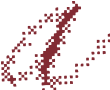

a multidisciplinary designer interested in using technology to simplify complex information into accessible, thoughtful, human centred experiences.
Figma, Affinity, Final Cut Pro, WordPress, Adobe (Photoshop, Illustrator, InDesign), HTML/CSS/JavaScript, GitHub, VS Code, Tableau
Visual Design, Interaction Design, UX & UI, Human Centred Systems, Website Content Management, Cross-Functional Collaboration, Stakeholder Communication
Pender Island Chamber of Commerce
Eva Meloche
WLF Gardens | Hydroponic Labs
the abroadDiaries
Mood Machine - IAT 359
Duck Pond Studios - IAT 339
BSc Interactive Arts & Technology
Exchange Semester — Interaction Design
this background is a bitmap flow field built with p5.js.
each pixel's colour is determined by perlin noise — a gradient noise algorithm that produces smooth, organic variation. unlike pure random noise, perlin noise changes gradually across space, creating the flowing patterns you see. I first learned these concepts through the nature of code by daniel shiffman, which continues to shape how I approach creative coding.
the field drifts slowly over time as a third noise dimension (z) increments each frame. moving your cursor creates a ripple that propagates outward using a wave equation, displacing the energy values of neighbouring cells.
text areas use a clear zone system, pixels near content are remapped from crimson to blue so nothing obscures readability.